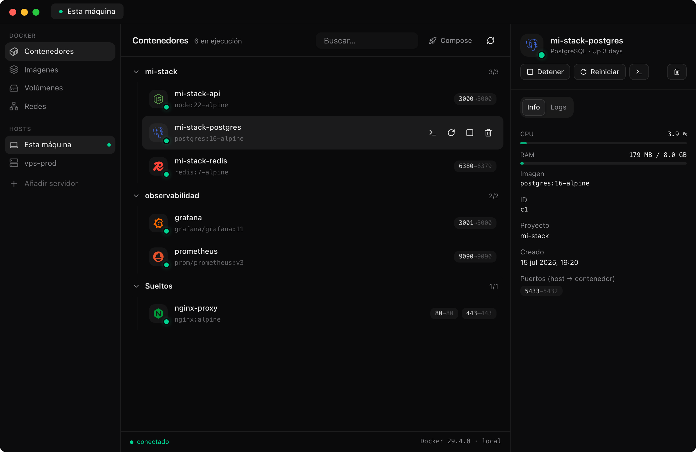

Gestor de Docker de escritorio para tu máquina y tus servidores por SSH. Sin agentes, sin puertos abiertos, sin paneles web pesados.
macOS · Linux · Windows — gratis y open source

La misma interfaz para el Docker de tu máquina y el de cualquier VPS. Cambiar de host es un clic; todo lo demás funciona exactamente igual.
Tu Docker Desktop, OrbStack o Colima — y tus servidores por SSH. Importa tus hosts desde ~/.ssh/config en dos clics.
Contenedores organizados como tú piensas: por proyecto, con iconos por servicio (Postgres, Redis, Nginx…) y acciones de grupo.
Pega tu docker-compose.yml, dale un nombre y míralo levantarse con la salida en vivo — en local o en tu VPS.
Terminal real (xterm) vía Docker API: bash o sh, redimensionable, con colores. Funciona idéntico contra servidores remotos.
Logs en streaming con búsqueda, CPU y RAM por contenedor, y badges de healthcheck que te avisan antes de que duela.
Las cuatro vistas completas, con limpieza guiada (prune) que te dice cuánto espacio liberaste. Y paleta ⌘K para todo.
Portainer te pide instalar un agente y exponer un puerto. Narwhal usa la conexión SSH que ya tienes: reenvía el socket de Docker por un canal cifrado y habla la API nativa. El servidor solo necesita tener Docker.
┌─ Narwhal ────────────────┐
│ UI · logs · stats · exec │
│ Docker API (Rust) │
└─────┬──────────────┬──────┘
│ socket local │ túnel SSH (russh)
┌─────▼─────┐ ┌─────▼──────────────────┐
│ Docker de │ │ /var/run/docker.sock │
│ tu máquina│ │ del servidor — sin agente│
└───────────┘ └─────────────────────────┘
Los hosts se guardan sin contraseñas. Password o passphrase se piden al conectar y viven solo en memoria durante la sesión.
Como OpenSSH: la primera conexión registra la huella del servidor. Si algún día cambia, Narwhal corta y te avisa de posible MITM.
SSH con russh (Rust puro), Docker API con bollard, app nativa con Tauri 2. Ligera de verdad, sin Electron.